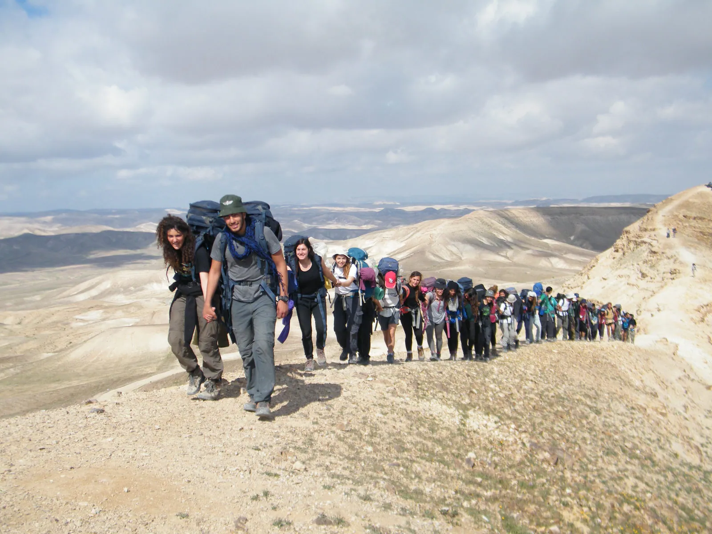
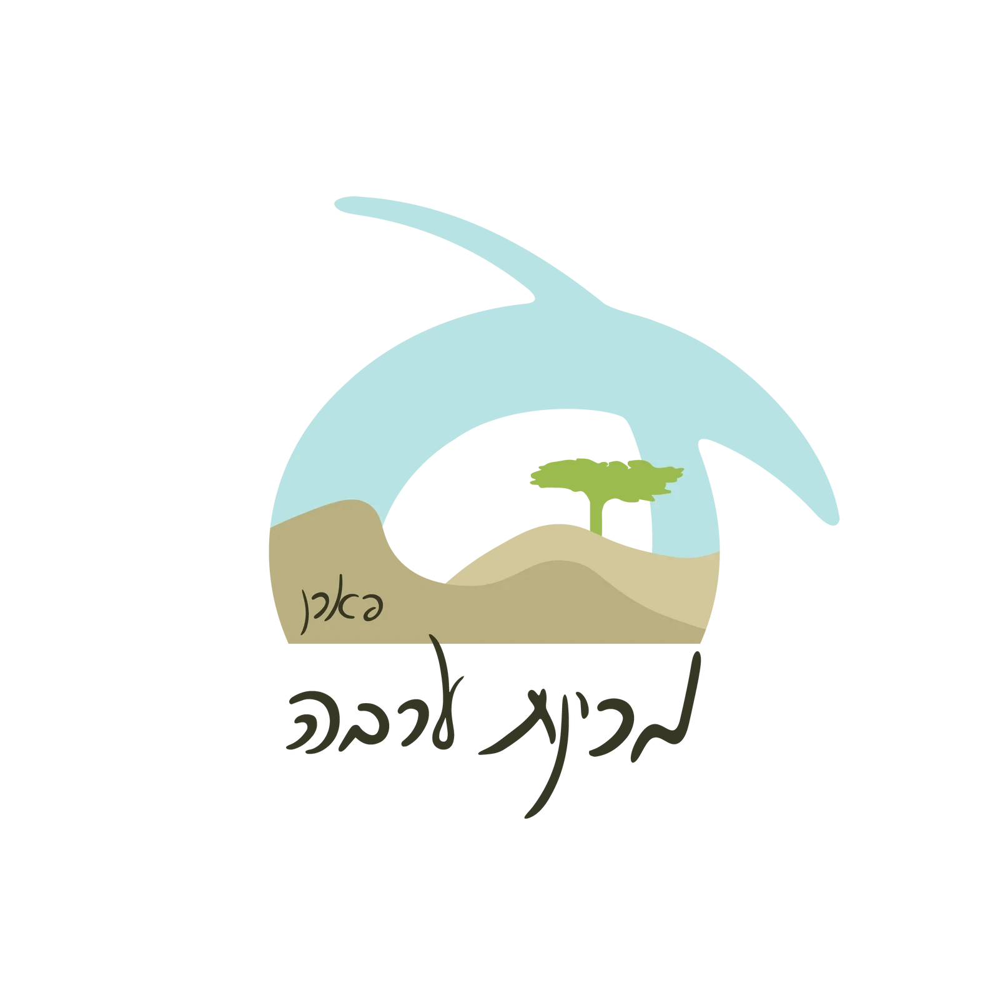
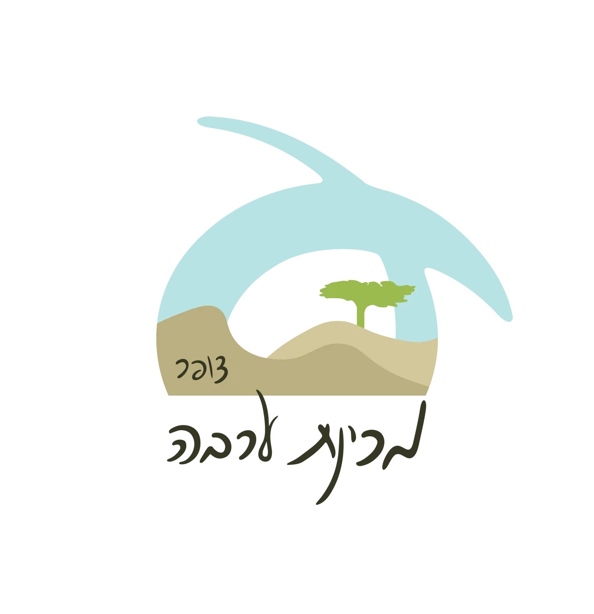
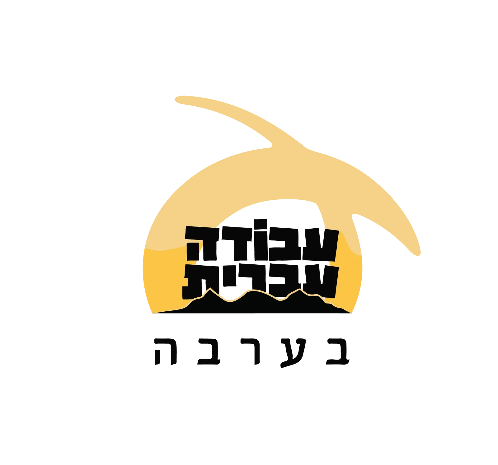
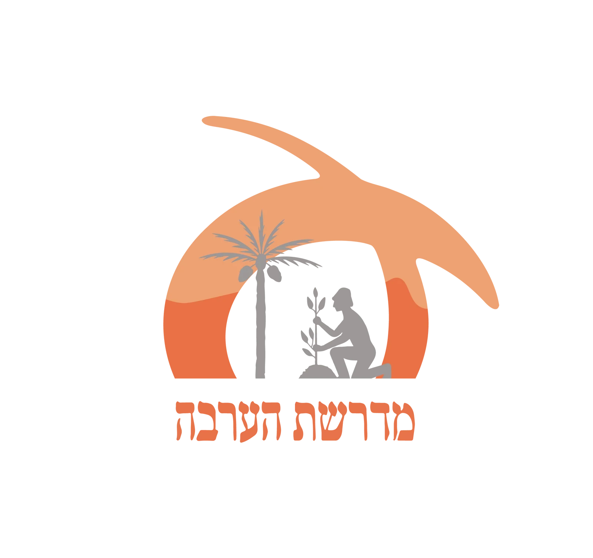
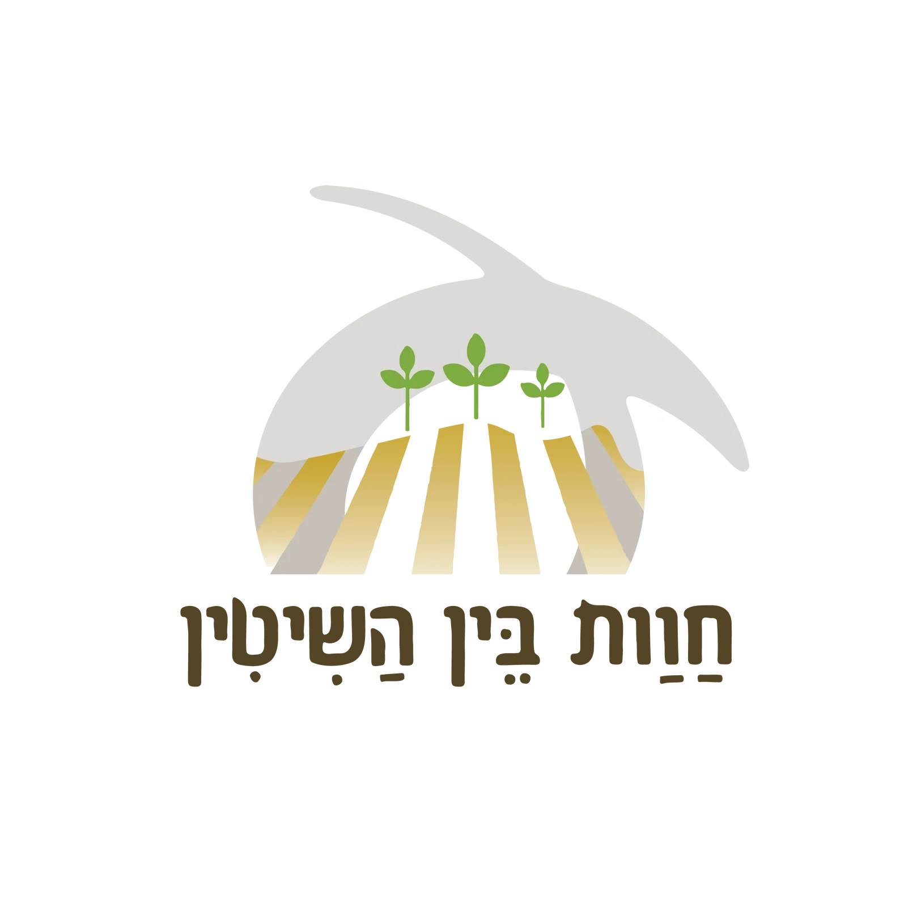
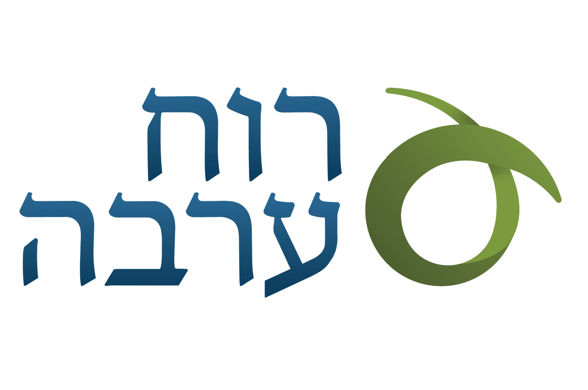
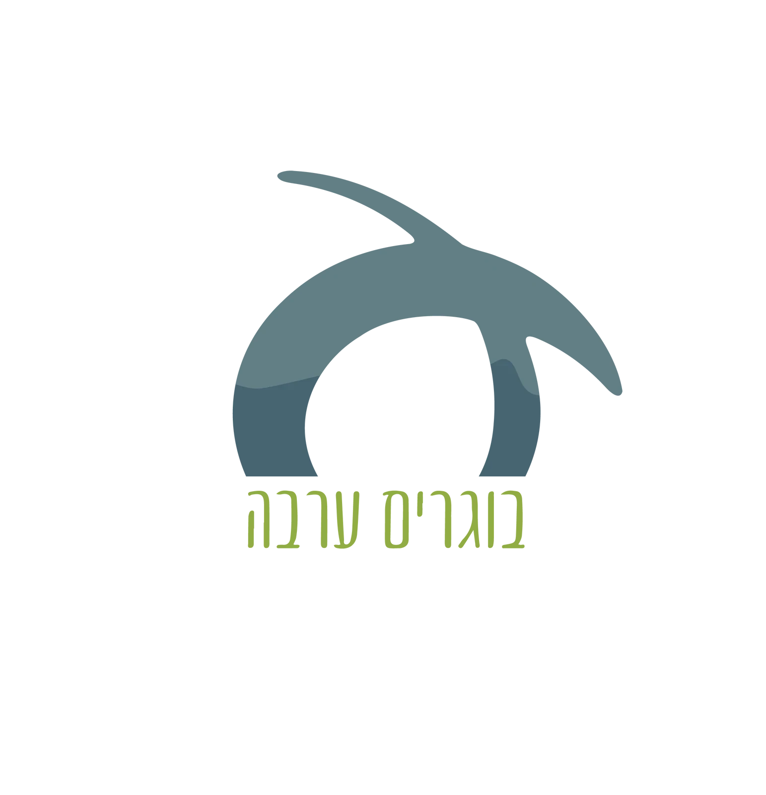
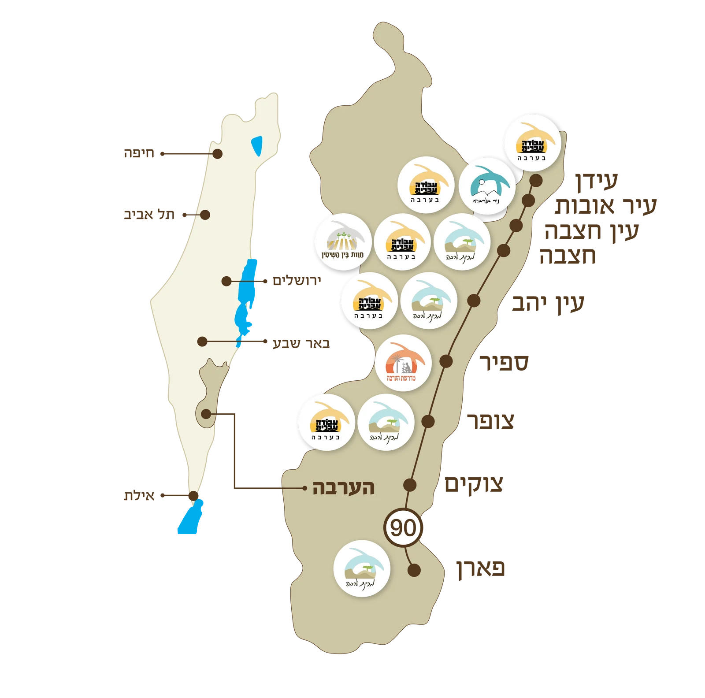

ציונות ללא ציניות
תכניות חינוכיות-ציוניות לצעירים בלב הערבה, שמחזקות את ההתיישבות ואת החברה הישראלית.
בני הדור השני לחלוצי הערבה
עמותת רוח ערבה הוקמה בשנת 2009. החזון שלה הוא "להיות ארגון מוביל בתהליך פיתוחה וחיזוקה של ההתיישבות בערבה התיכונה, להגדלת חוסנה של החברה הישראלית ומדינת ישראל, באמצעות פיתוח והפעלת תכניות חינוכיות-ציוניות לצעירים בערבה".
מאז שנוסדה הקימה העמותה, בזה אחר זה, פרויקטים חינוכיים וחברתיים פורצי דרך. בבסיס הפעילות עומדים ציונות ללא ציניות, חיזוק אזור הערבה, חיזוק הזהות היהודית-ישראלית והצמחת מנהיגות משרתת מרקע אישי וחברתי רחב.
קראו עוד עלינו

מסגרות לצעירים, לפני הצבא ואחריו
מכינות קדם-צבאיות, תכניות לבוגרי שירות, חקלאות, לימוד וקהילה, ברחבי הערבה התיכונה.

מכינת ערבה-חצבה
המכינה הראשונה, מאז 2009
לפרטים נוספים
מכינת ערבה-עין יהב
מאז 2017
לפרטים נוספים
מכינת ערבה-פארן
מאז 2013
לפרטים נוספים
מכינת ערבה-צופר
מאז 2021
לפרטים נוספים
עבודה עברית
7 חודשים של חקלאות, לימוד וחיי קבוצה לבוגרי שירות
לפרטים נוספים
מדרשת הערבה
תכניות עומק לקהלים בוגרים
לפרטים נוספים
חוות בין השיטין
חווה חקלאית לתיירות חינוכית
לפרטים נוספים
התיישבות בערבה
ערבה זה בית: מידע על היישובים ועל הקליטה
לפרטים נוספים
בוגרים ערבה
ממשיכים ללוות את הבוגרים גם אחרי המכינה
לפרטים נוספיםמושב אחד ו-20 חניכים, ועד היום
- 2009
מכינות ערבה
המכינה הראשונה קמה בחצבה. אחריה פארן (2013), עין יהב (2017) וצופר (2021).
- 2011
עבודה עברית
תכנית של 7 חודשים לבוגרי שירות צבאי ולאומי, עם כ-300 משתתפים בשנה.
- 2017
חוות בין השיטין
מיזם חינוכי-חקלאי-תיירותי שמארח קבוצות מהארץ ומהעולם.
- 2019
מדרשת הערבה ו-SOS Wifi
מסגרת גג לתכניות עומק, ומערכות תקשורת מצילות חיים במסלולי טיול.
- 2020
התיישבות בערבה
תחום פעילות חדש, בשיתוף המועצה האזורית ערבה תיכונה, חבל אילות וקק"ל.
